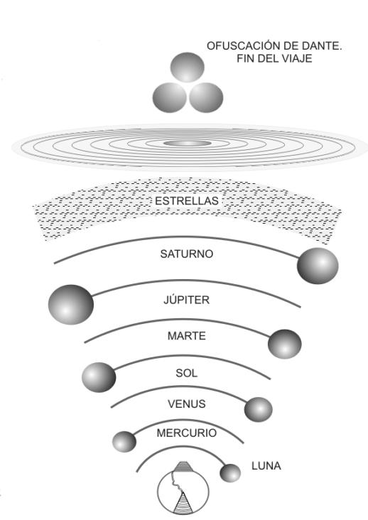

1
Primer cielo: Luna
Inconstancia: almas que faltaron a sus votos por fuerza mayor o inconstancia, como Piccarda Donati.
El cielo descrito en La Divina Comedia es una morada de luz pura y orden perfecto, donde las almas justas, libres de toda pena, habitan en eterna armonía, contemplando la gloria divina en un gozo sin fin.
El Paraíso se ordena en nueve cielos y culmina en el Empíreo, morada de Dios y de los bienaventurados.

Inconstancia: almas que faltaron a sus votos por fuerza mayor o inconstancia, como Piccarda Donati.
Ambición: espíritus activos que hicieron el bien por deseo de fama y honor, más que por amor divino puro.
Amor: almas que fueron amantes apasionados, redimidos por el amor a Dios, como Carlos Martel.
Sabiduría: espíritus sabios, teólogos y filósofos que iluminaron el intelecto, como Santo Tomás de Aquino.
Guerreros de la Fe: guerreros santos que lucharon por la fe. Aquí Dante encuentra a su antepasado Cacciaguida.
Justicia: gobernantes justos y sabios que formaron la figura de un águila imperial.
Contemplación: espíritus contemplativos y monjes que dedicaron su vida a la meditación.
Iglesia Triunfante: se revela la inmensidad de los santos y se muestra a Cristo y la Virgen María.
Cristalino o Primer Móvil: el cielo más rápido que mueve a todos los demás, jerarquizado por coros angélicos.
Más allá de estos nueve cielos se encuentra el Empíreo, el cielo de pura luz, morada física de Dios, los ángeles y los bienaventurados.